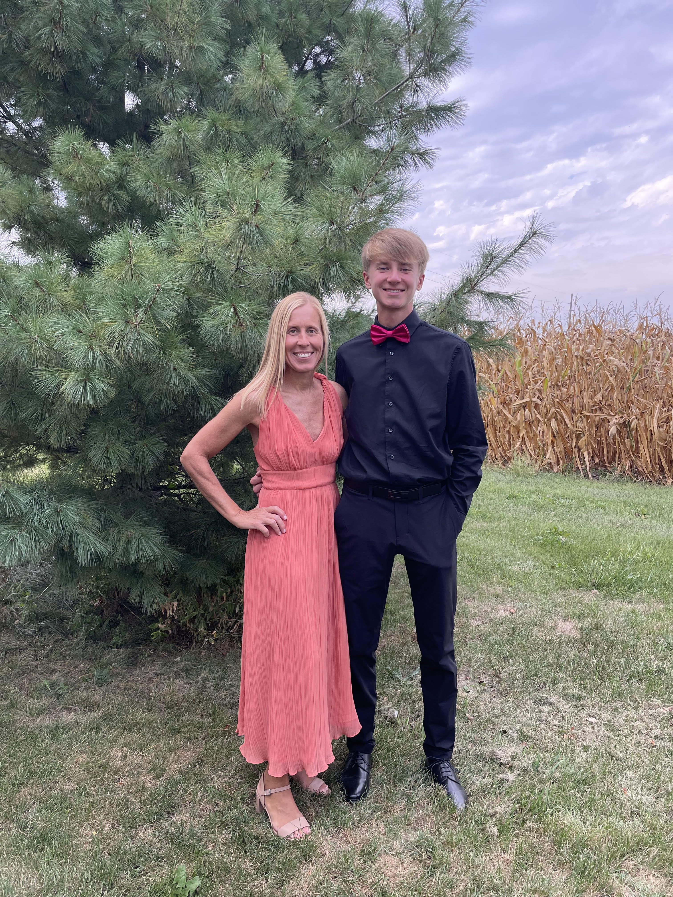
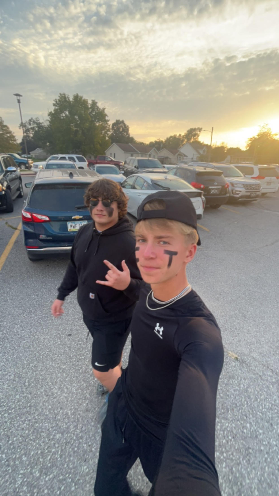

My entire family is very hardworking, they are all supportive of any decision I can and will make. My mom and dad have put a lot of time and money on me just so that I coould live out any kids dream. Most of my friends I have grown up with most of these people since I was a kid but overtime I have made new friends. Some of these people I see on a day to day basis, but some I might see once a week, but that doesn't change anything. These people have helped me grow into the person I am today.
My Dad and I have gotten a lot closer over the years thanks to sports. We always have had a bond over baseball, but as I've grown up baseball hasn't felt the same. We both enjoy the game of golf. Anytime we get the chance to play together its never a friendly match, we are trash talking, and going for eachothers throat's. He has never given up on me even though he hates it when I have bad games. We have had our ups and downs but always seem to get over that hump.
Mom on the otherhand is the nicer one of the two when ever I need to talk shes the one I go to. My Mom and I are always able to have a good laugh no matter how tough times can be. It's funny because me and my mom are usually making fun of my dad in any way possible. My mom is the one I go to when I know my dad would never give my idea a chance. My mom and I love doing stuff together, what's funy is I will skip school and she will all of work and we do whatever we want that day.
When you think of a best friend in high school you may think that they are the same age as you, but that is not the case here. I had always know cale growing up our families were really close. As soon as I got into high school I tried out for the golf team, and that is where me and Cale got close. He helped me get use to the high school, and really how it worked. He took me to all of the activities the seniors did and I started to fit in really quick with the upper classman. Although, now im a junior in high school and, he is a sophmore in college, yet we are still close, and keep in touch.
Unlike Cale, I haven't known Dylan all my life we met in the sixth grade. We were always in the same friend group, but never really got close with each other around our seventh grade year. We started to get really close and, that's when we became best friends Dylan's been there for me through hard times, and I've been there for him. What's funny is me and Dylan can go a week or two without talking to each other in the bond is still super strong. Dylan is very athletic, and we play some sports together and finally for a best friend, I wouldn't want to change it for anybody else.
